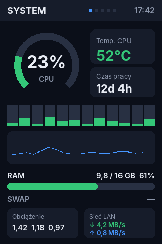

60%
?
23:00 – 07:00
Unraid APIOK · 2 s
Docker (socket proxy, )OK
OK
CPU 0,4% · RAM 48 MB

1 · System10 s

10 s

3 · Docker10 s

15 s

10 s
| Temp. | SMART | |||
|---|---|---|---|---|
| Parity | parity | 34°C | OK | |
| Disk 1 | array | 36°C | OK | |
| Disk 2 | array | — | OK | |
| Disk 3 | array | 47°C | ||
| Disk 4 | array | — | OK | |
| Cache | pool | 41°C | OK |
| CPU | RAM | |||
|---|---|---|---|---|
| plex | 6,1% | 1,2 GB | ||
| immich | 3,4% | 2,1 GB | ||
| nextcloud | 1,2% | 640 MB | ||
| adguard | 0,3% | 120 MB | ||
| paperless | — | — | ||
| homelabber | 0,8% | 310 MB | ||
| sabnzbd | 0,2% | 180 MB |
| °C | °C | ||
| °C | °C | ||
| °C | °C | ||
| % | % | ||
| RAM | % | % | |
| % | % | ||
| — | |||
| — |
Turing Smart Screen 3,5"
rev A
VID:PID1a86:5722
USB35INCHIPSV2
/dev/ttyACM0
⇄
◫
?
17:41:02 INFO usb: test OK, klatka 320×480 w 0,62 s
17:40:55 INFO usb: ekran podłączony /dev/ttyACM0 (1a86:5722)
17:40:41 WARN usb: ekran odłączony, ponawiam co 5 s
17:32:10 WARN docker: kontener paperless zatrzymany
17:05:00 INFO unraid: parity check w toku, 63,4%
16:58:12 INFO start: panel na porcie 8765, tryb USB
17:40:55 INFO usb: ekran podłączony /dev/ttyACM0 (1a86:5722)
17:40:41 WARN usb: ekran odłączony, ponawiam co 5 s
17:32:10 WARN docker: kontener paperless zatrzymany
17:05:00 INFO unraid: parity check w toku, 63,4%
16:58:12 INFO start: panel na porcie 8765, tryb USB